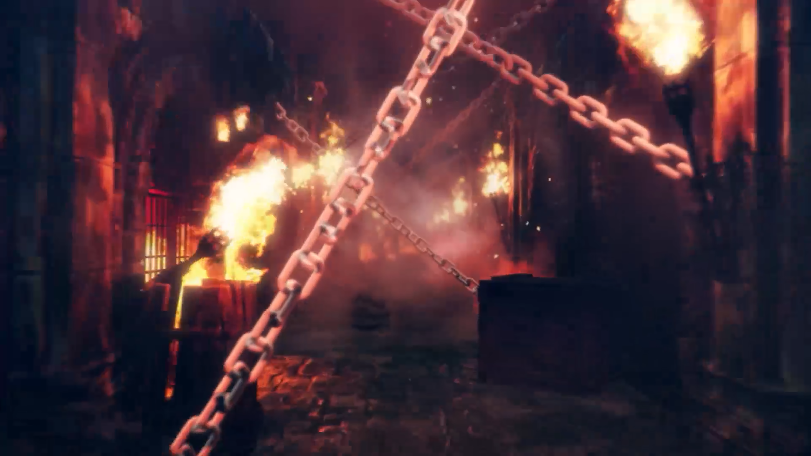
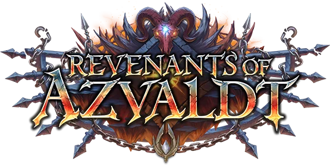
2026年8月27日（周四）上线
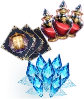
《复苏的阿兹弗特》上线纪念！
牌组补充套装
现已在 Cygames WebStore 发售
复苏的阿兹弗特 /
Revenants of Azvaldt
Revenants of Azvaldt
点击前往卡包页面
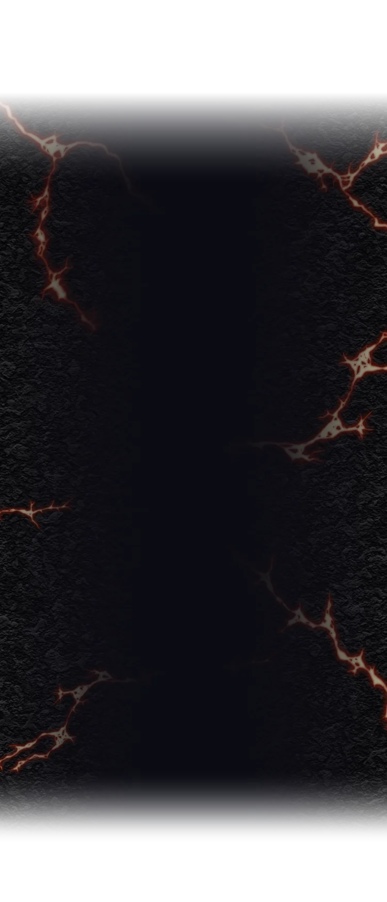
MOVIE
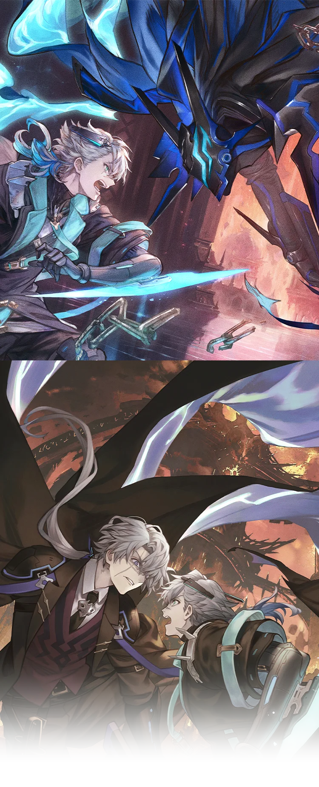
罪大恶极的罪人们，被囚禁于神所创造的监狱——阿兹弗特。
罪人们为了各自的目的试图越狱。
甚至不知道阻挡在眼前的敌人究竟是谁，
便投身于惨烈的战斗之中。
罪人们为了各自的目的试图越狱。
甚至不知道阻挡在眼前的敌人究竟是谁，
便投身于惨烈的战斗之中。
在越狱剧的尽头，
第一层的罪人——卡特斯罗特击败了监狱的创造主泽勒尔。
然而，这并非惩罚的终结，只是开始而已。
随着泽勒尔的死亡，施加在执行者们身上的诅咒得以解除，
他们也显露出真实身份。
罪人们与各自深有因缘的对象重逢——并直面自己的罪孽。
第一层的罪人——卡特斯罗特击败了监狱的创造主泽勒尔。
然而，这并非惩罚的终结，只是开始而已。
随着泽勒尔的死亡，施加在执行者们身上的诅咒得以解除，
他们也显露出真实身份。
罪人们与各自深有因缘的对象重逢——并直面自己的罪孽。
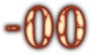
监狱统治者
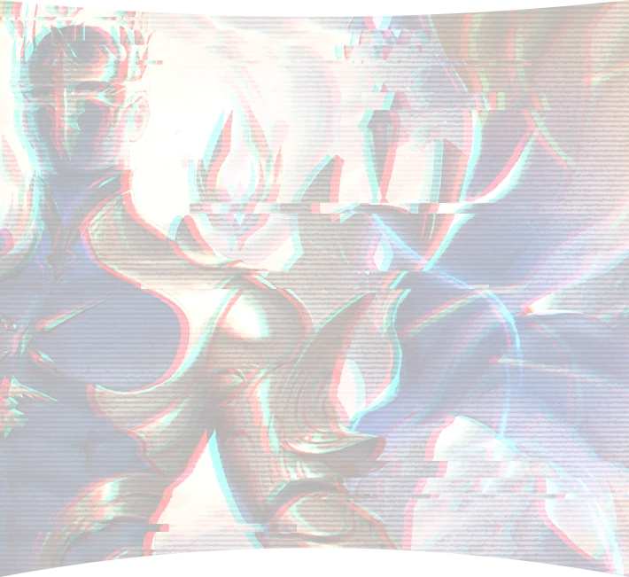
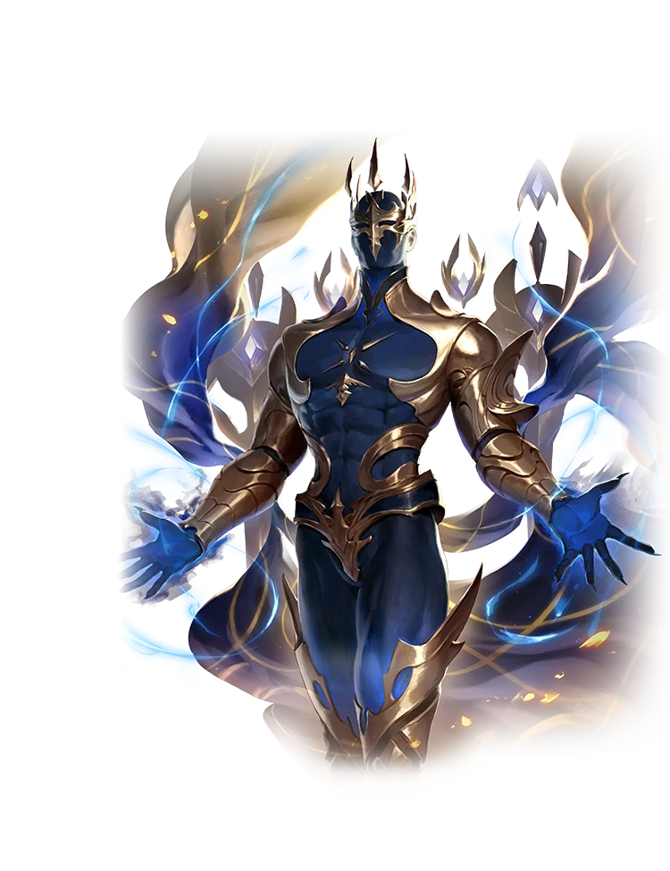
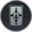
泽勒尔
声优：井上和彦支配大监狱·阿兹弗特的轮回统治者。
为了给予罪人永远的惩罚，役使着执行者。
然而，当无尽的圆环被斩断之时，
完美无缺的支配也将迎来终焉——
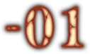
第一层“弹哭”
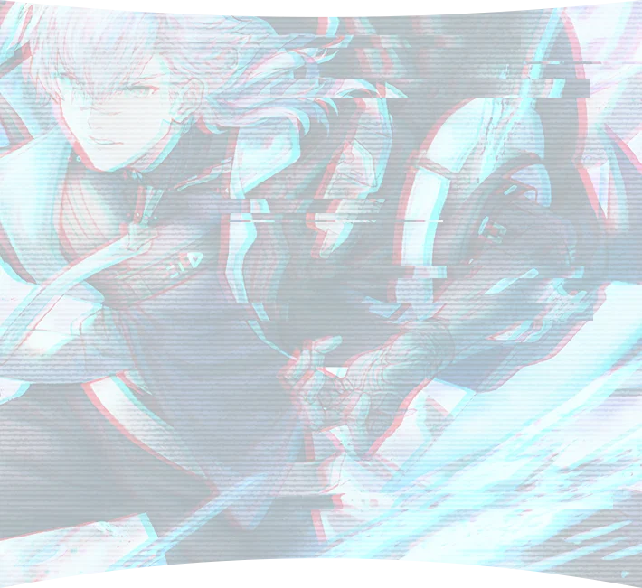
——《绝密记录》No.1【T-2342-34UG23】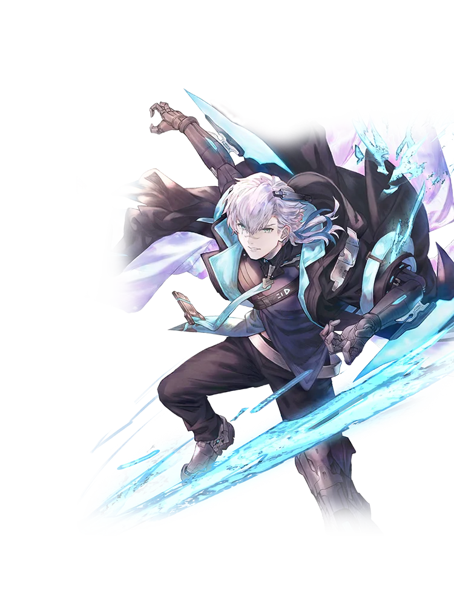
卡特斯罗特
声优：花江夏树囚犯编号：B-4234-44HE42
颠覆了堪比国家的大城市的罪人。
为了带回唯一且不可或缺的兄长——艾兹伊甸，
他以光子集束刃“白牙燐敛”斩断妄执。- ——《绝密记录》No.2【N-15-E43N45】
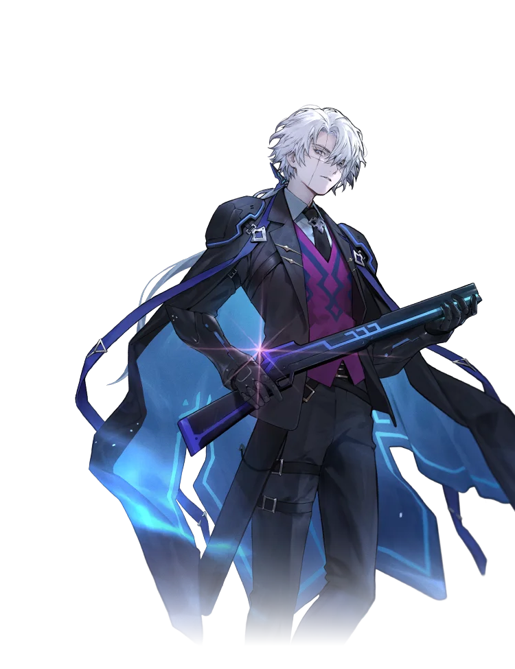
艾兹伊甸
声优：冈本信彦识别编号：42E-23-4434RB
执行者基鲁萨埃尔从诅咒中解放后的姿态。
为了击倒弟弟——卡特斯罗特，实现最后的理想，
他将炯轨追踪弹“理想射手”射向仇敌。
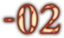
第二层“禁牙”
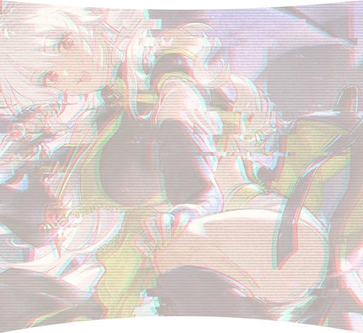
——《绝密记录》No.3【G45-24-DI3322】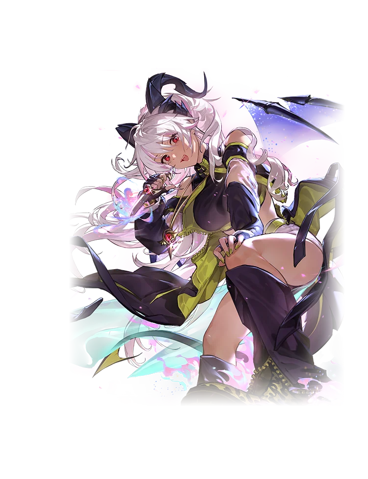
安缇马丽亚
声优：佐仓绫音囚犯编号：F-42-IE3314
向君临世界的权威露出獠牙的罪人。
为了夺回友人——诺玛格达拉，填补自身的缺失，
她以穿孔焰“利牙”，将成为阻碍的友人一并贯穿。- ——《绝密记录》No.4【15C-11-42G】
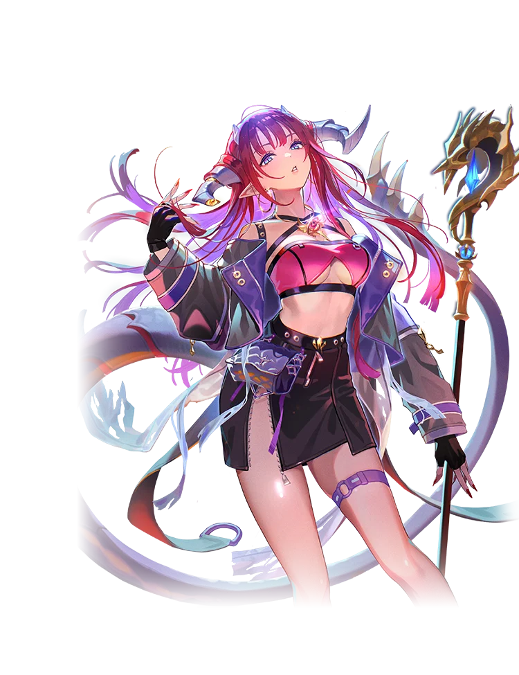
诺玛格达拉
声优：Lynn识别编号：14N-15-2442F
执行者德拉兹埃尔从诅咒中解放后的姿态。
为了禁绝沦为愚钝的友人——安缇马丽亚的软弱，
她以荡尽杖“耻意”，将其所依附的一切悉数排除。
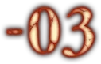
第三层“灭尸”
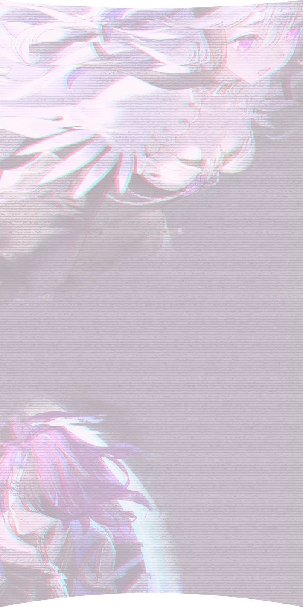
——《绝密记录》No.6【43D-34-G】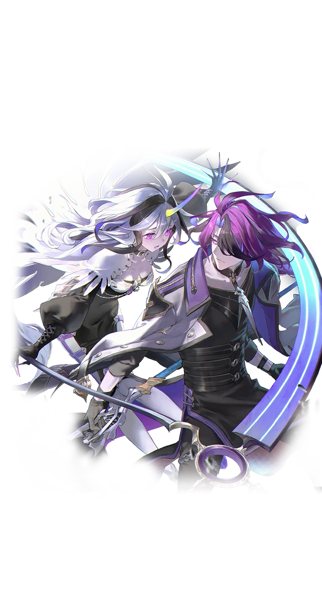
玛尔奇盖特
声优：咲川雏乃识别编号：22N-24-3112IS
执行者米罗埃尔从诅咒中解放后的姿态。
为了清算与弟弟——伊斯坦戴德互相推诿的罪孽，
她凭借万死大镰“临终之时”，试图与弟弟同归于尽。- ——《绝密记录》No.5【T-42-AN4335IR1514】
伊斯坦戴德
声优：三木真一郎囚犯编号：S-2412-LI3322
招来并率领死亡军团，蹂躏生命的罪人。
只为了珍重一个生命，
他试图凭借招死体质“波罗土希死”，
从最爱的姐姐——玛尔奇盖特身边逃离。
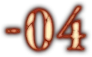
第四层“香风”
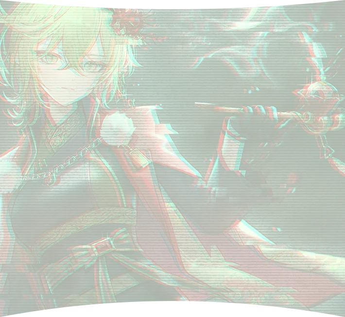
——《绝密记录》No.7【G-42-24M】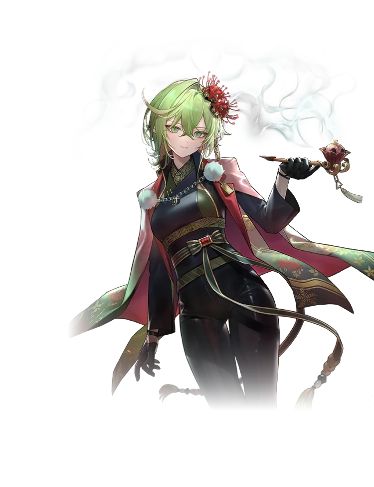
曲千代
声优：川澄绫子囚犯编号：M-34-T231542
刈除森林父祖，背弃仁义的罪人。
为了被独生子——飞燕讨伐，将继承权正当地让渡于他，
她以斗殴烟管“绯岸橙醉”，化作令万物枯萎的烟害。- ——《绝密记录》No.8【15S-24-32E14】
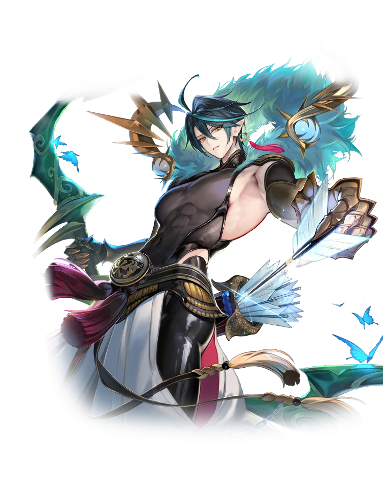
飞燕
声优：铃木达央识别编号：33O-24-13S
执行者威姆埃尔从诅咒中解放后的姿态。
为了向母亲——曲千代证明自己继承了正道的仁义，
他以御风弓矢“散散四葩”，将邪魔外道尽数吹散。
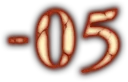
第五层“破式”
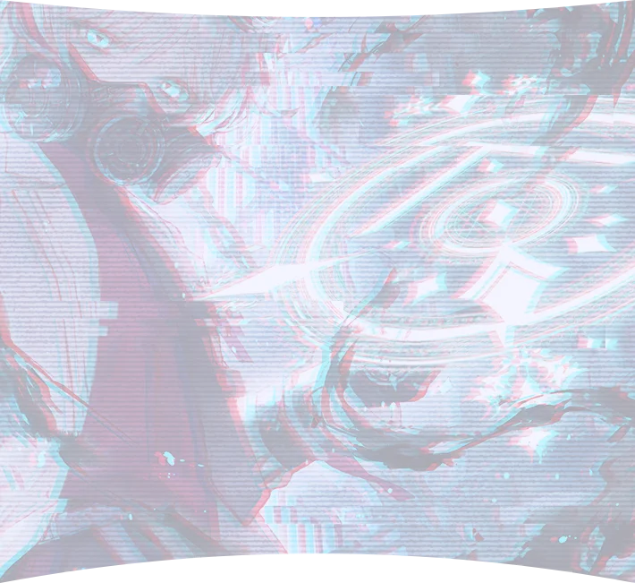
——《绝密记录》No.9【4535-O33】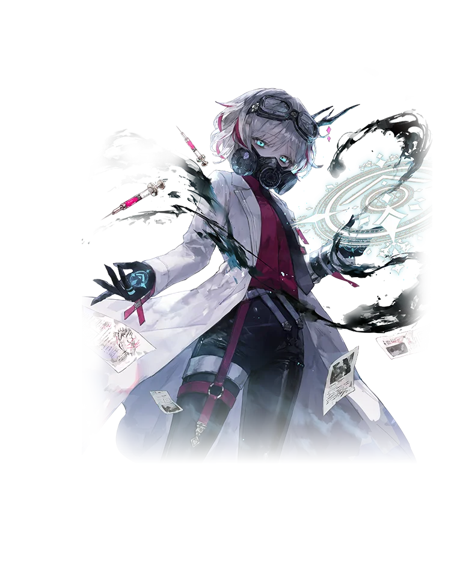
赛菲
声优：水濑祈囚犯编号：S-24-ST1542
解体众人，并献作通往真理之祭品的罪人。
为了“治疗”妹妹——菲绫患病后留下的后遗症，
她以万术手套“乌涅”，重启背离人道的实验。- ——《绝密记录》No.10【DE3111-EC-N3413】
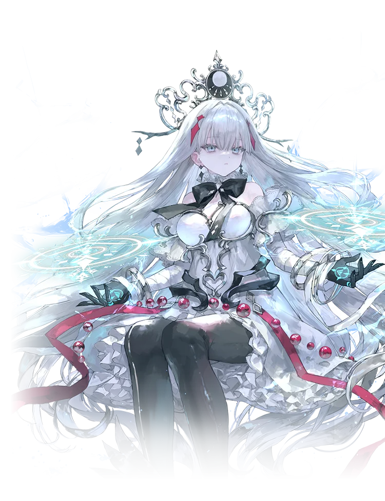
菲绫
声优：大西沙织识别编号：42E-44-4324S
执行者夏摩埃尔从诅咒中解放后的姿态。
为了让姐姐——赛菲接受残虐实验的报应，
她以聚约破式“鹄白炼”，将收集的术式化作讨恶之术。
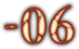
第六层“翼天”
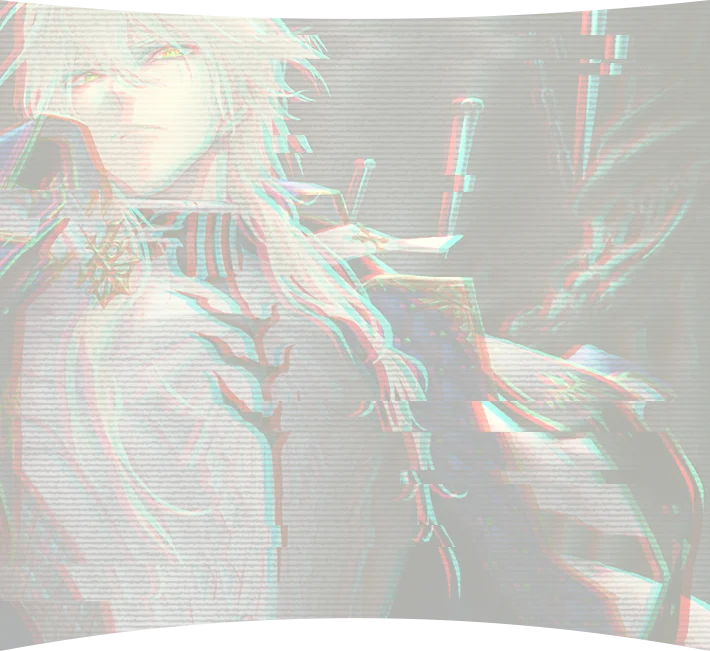
——《绝密记录》No.11【T-4245-TH43】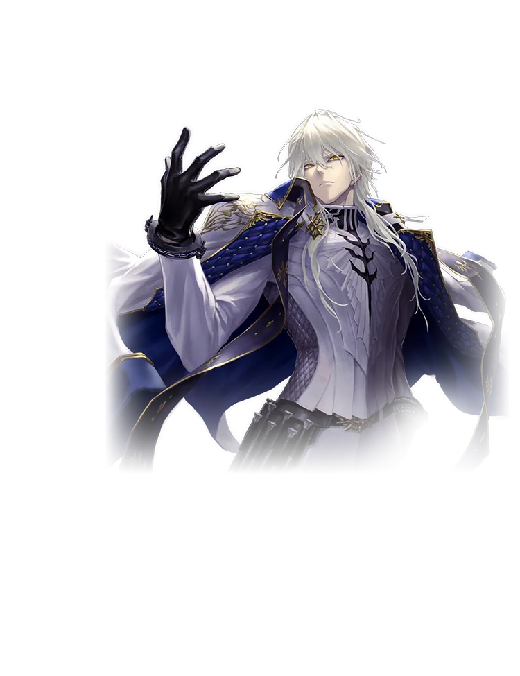
艾尔拉德
声优：石田彰囚犯编号：P-1142-TN1542
以丑恶的争斗玷污神圣领域的罪人。
为了终结对昔日友人——奥梅里欧的憎恶，
他以神纹“誓言”之楔，连同那份约定一并切碎。- ——《绝密记录》No.12【31L-11-23S】
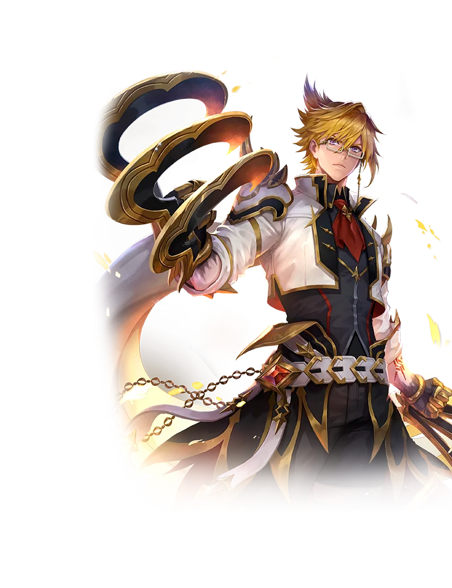
奥梅里欧
声优：关智一识别编号：42E-33-4442AP
执行者乌努埃尔从诅咒中解放后的姿态。
为了让友人——艾尔拉德承受背信的报应，
他以业果钩爪“自由之翼”，撕裂那断绝约定的傲慢。
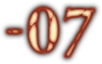
第七层“武皇”
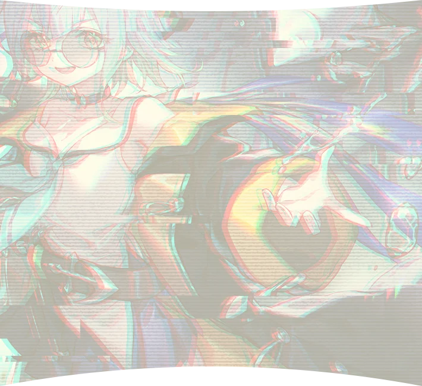
——《绝密记录》No.13【T-2432-15S】巴巴洛丝
声优：悠木碧囚犯编号：D-114522-HT1542
巧妙掌控人心，将人们引入歧途的罪人。
为了玷污身为义贼的父亲——贝尔铁佐所高举的正义，
她以逆行舵轮“黄金时代”，否定善意与情谊。- ——《绝密记录》No.14【15G-11-4343AP】
贝尔铁佐
声优：佐藤拓也识别编号：42E-23-4411F
执行者雷迪埃尔从诅咒中解放后的姿态。
为了阻止女儿——巴巴洛丝所高举的自由，
他心怀觉悟，挥动正道刀剑“黄金波刀”。
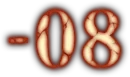
第八层“蛇殿”
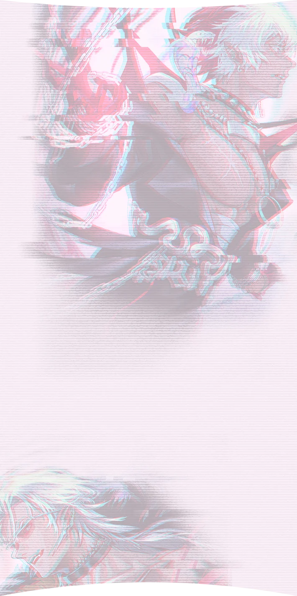
——《绝密记录》No.15【S-23-E14】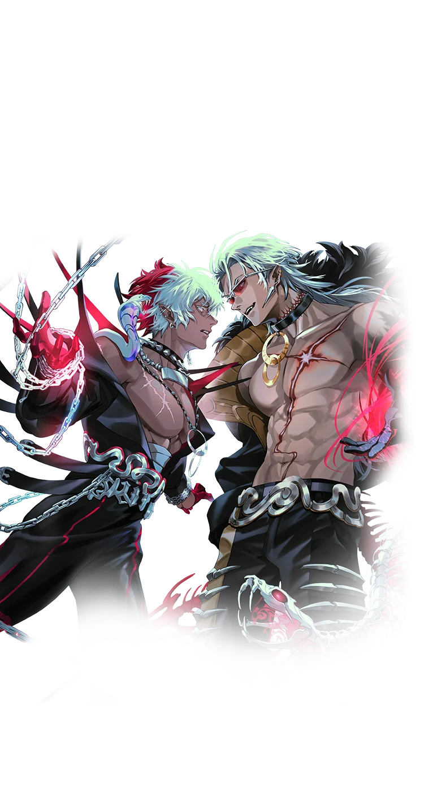
伽罗塔德
声优：木村良平囚犯编号：D-244313-IP3115
虐杀名门魔族一家眷属的罪人。
为了贯彻自己的愿望，面对阻挡在前的师父——泽特，
他挥动击坠锁链“破蛇”，沿着自己的道路一往无前。- ——《绝密记录》No.16【44H-22-24L】
泽特
声优：安元洋贵识别编号：42E-44-4311M
执行者克诺姆埃尔从诅咒中解放后的姿态。
为了阻止弟子——伽罗塔德的暴虐，
他以蔓延的猛毒“晓噬”，封住通往未来的道路。
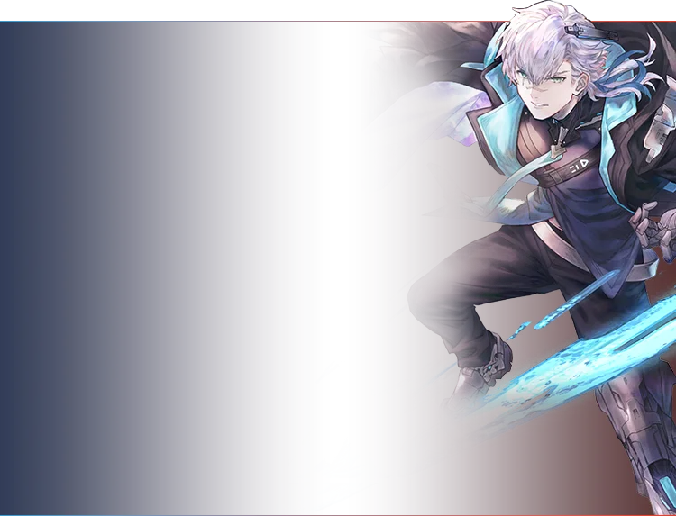